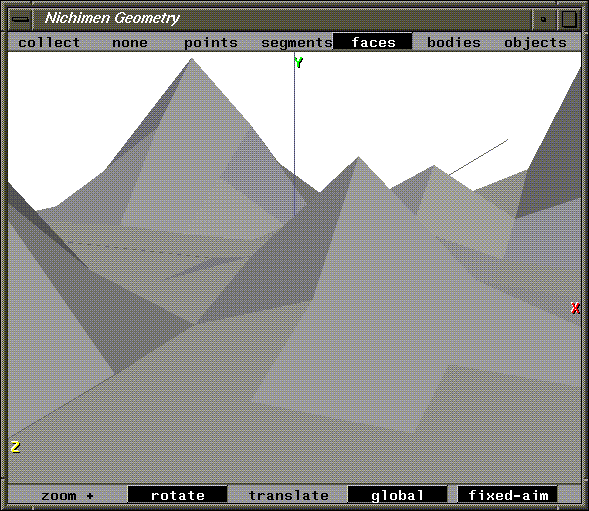
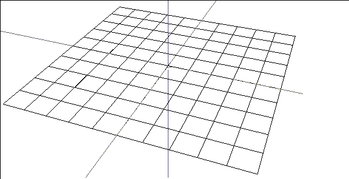
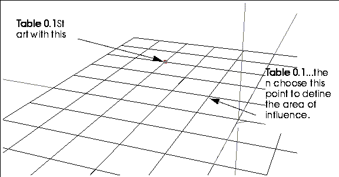
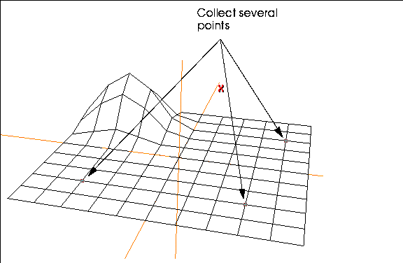
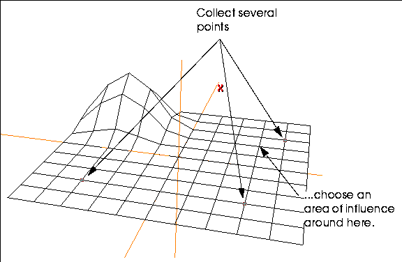
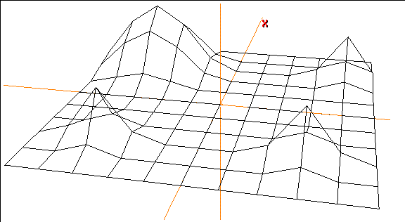
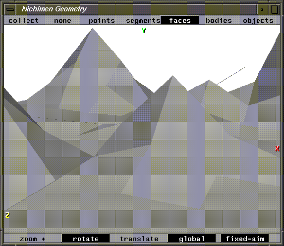
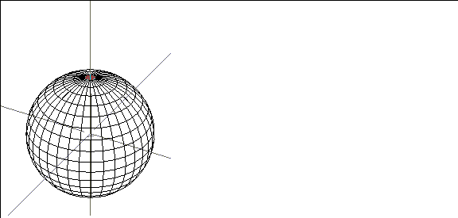
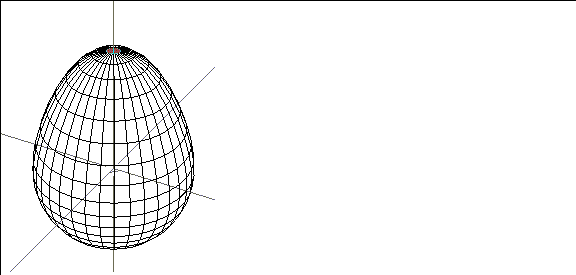
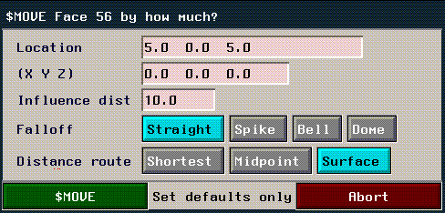

In this chapter you'll learn how to use N-Geometry's magnet operation technique to distribute the effect of a command over a selected area of a model.
You'll learn about the following concepts:
In this Chapter
1. (CLICK-L) on GeoMenus>File>New Object.
Building a Mountain Range
3. Set the Orientation to Y and (CLICK-L) on the Make Grid button.
A grid appears in the N-Geometry window:

Magnet moves let you perform an operation on an entire area of an object; the effect of the operation is strongest at the center of the area, and falls off toward the edge. We can use this magnet feature to create some very natural looking deformations. We'll use it in the sample below to pull up a natural looking mountain from a flat surface:
Using Magnet Operations
4. (SHIFT-L) on a vertex near the corner of the grid.
7. (CLICK-L) on a vertex two units away from your peak.

This defines the area of influence for the move.
8. Move the mouse to the right.
Magnet Moves on Multiple Elements
How is influence calculated if you have multiple elements selected?
9. Collect several points on the grid that are somewhat separated from each other.

11. (CLICK-L) on Y to select the Y Axis.
12. (CLICK-L) on a vertex one square away from the peak closest to the upper right grid.

13. Move the mouse to the right and pull up several mountains.

Figure 5.8 The sphere of influence is the same for each selected element
Try pulling out several different mountains, using different areas of influence.
Performing Magnet Moves on Other
You can perform a magnet move using a vertex, segment, or face as the "center" for the area of influence.
Element Types
Repeat steps 4 through 8, selecting a segment or face (instead of a vertex) in step 4.

Which Commands?
The magnet feature can be used with almost any modify operation in N-Geometry.
1. (SHIFT-L) on the face on top of the sphere, then (ALT-M) on Axis Move>Y.
Making an Egg

2. Select a point somewhere near the sphere's "equator" to set the area of influence.
3. Move the mouse to the right.

If you want to simulate part of a model being "pulled," or sucked into a vacuum, you want to use a magnet move.
Creating a "Vacuum" Effect
1. (SHIFT-L) on the face on top of the sphere.
3. Select a point somewhere near the sphere's "equator" to set the area of influence.
4. Move the mouse to the right.
We'll use magnet operations in several of the other N-Geometry tutorials.
How the Area of Influence is Calculated
There are several methods for determining the area of influence when performing a magnet move; these methods are described in detail in the N-Geometry Reference Guide. Some methods use a "spherical" area of influence, while others measure the area along the surface.
Specifying an Area of Influence Numerically
If you want to specify the area of influence numerically, hold down both the ALT and CTRL keys when selecting the operation like Axis Move. This brings up the following menu, which is described in the following section:

You've now learned how to use magnet moves to create natural looking features on a landscape. You can use the magnet feature with most of N-Geometry's commands.
Congratulations!
Copyright © 1996, Nichimen Graphics Corporation. All rights reserved.